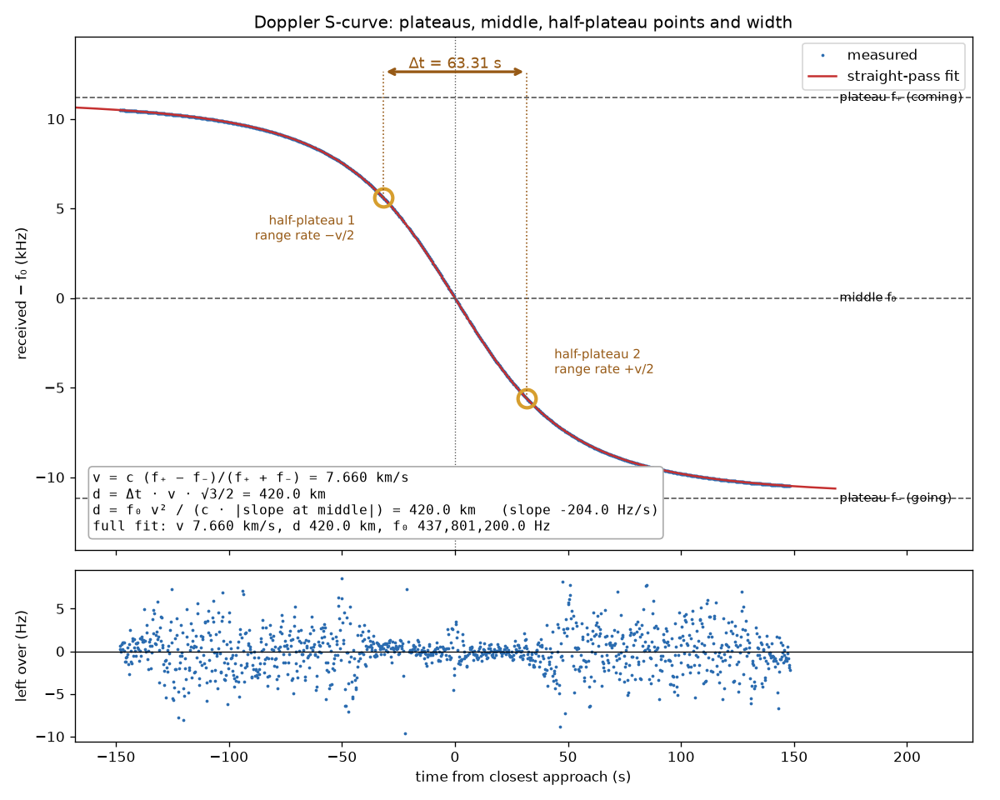
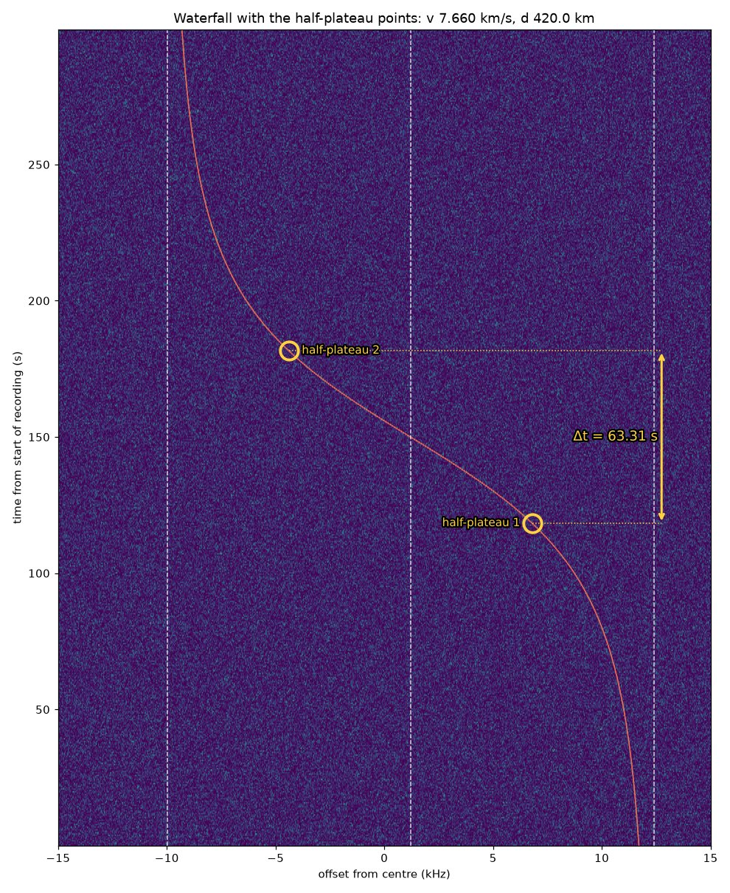
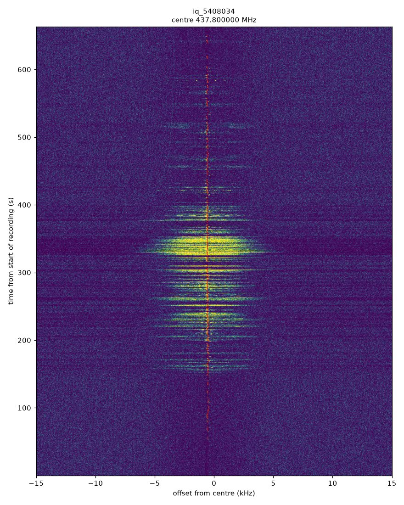

Doppler kit
Measure a passing transmitter's speed and closest distance from your own radio recording. Only the frequency shift you receive is used. No station position, no orbit and no map are needed.
From one recording you get:
- v: the speed of the source along its path.
- d: the closest distance between you and the source. When the pass goes straight over you, d is its height. From several passes, the smallest d comes closest to the height.
- t₀: the time of closest approach.
- f₀: the frequency the source actually transmits.
- Pictures of the S-curve and the waterfall, with the plateaus, the middle, the two half-plateau points and the width Δt marked where they fall.
What you need
- Python 3 with numpy, scipy and matplotlib:
pip install numpy scipy matplotlib. - An IQ recording made at a fixed frequency with Doppler correction off, through the whole pass if you can:
- a WAV file with 2 channels (I and Q), 8-bit, 16-bit or 32-bit float, such as an SDR++ "baseband" recording, or
- a headerless raw IQ file (
.raw,.cs16,.cf32,.cu8,.sigmf-data) with its sample rate.
- The centre frequency of the recording. SDR++ puts it in the file name (
baseband_437800000Hz_...).
A cheap RTL-SDR and a simple antenna are enough for the ISS (437.800 MHz FM repeater, 145.800 MHz voice).
Run
python3 iq_to_trace.py my_recording.wav
python3 fit_pass.py my_recording_trace.csv
Other inputs:
python3 iq_to_trace.py my_recording.wav --center 145800000 --start 2026-06-14T18:10:09Z
python3 iq_to_trace.py iq_5408034.raw --rate 48000 --center 437800000 # raw 16-bit IQ
python3 iq_to_trace.py capture.cf32 --rate 250000 --center 437800000 --format cf32
Options: --span (search ± Hz around the centre, default 15000), --swap-iq (Q stored before I), --out (output folder).
For the fit: --c (wave speed, default radio and light; 343 for sound) and --f0 (fix the transmitted frequency).
fit_pass.py also takes a trace from anywhere else: a CSV with columns t_s and f_Hz.
Output
| File | Content |
|---|---|
<name>_trace.csv |
t_s, utc, f_offset_Hz, f_Hz, snr_dB: received frequency against time |
<name>_waterfall.png |
0.1 s spectra, frequency across and time up the page, with the measured trace in red |
<name>_waterfall.npz |
the waterfall data, used for the marked waterfall |
<name>_summary.json |
settings, number of points, point noise, the frequency swing, fixed receiver lines found |
fit_pass.py
| File | Content |
|---|---|
<name>_fit.json |
v, d, t₀, f₀ with errors (full fit), and the plateau estimate |
<name>_scurve.png |
the S-curve with plateaus f₊ and f₋, middle f₀, half-plateau points, Δt, and the numbers worked from them; below it, what the fit leaves over |
<name>_waterfall_marked.png |
the waterfall with the fitted curve, f₊, f₀, f₋, the half-plateau points and Δt marked |
Check that it works
python3 make_test_iq.py
It writes a 300 s synthetic recording of a known pass (7.660 km/s, 420 km), runs both scripts, compares the answer
and deletes the recording. It ends with self-check passed. These are its pictures:


Doppler-corrected recordings do not work
Many receivers, SatNOGS stations among them, retune along the Doppler predicted from the published orbit while they record.
Their recordings hold only what is left over after that prediction, a nearly straight line instead of an S.
iq_to_trace.py prints a note when the signal moves less than a fifth of the search span.
Example: SatNOGS observation 5408034, the ISS at 437.800 MHz on 3 February 2022, recorded by the Dwingeloo radio telescope. The ISS carrier stays within about 270 Hz for the whole pass. A pass recorded at a fixed tuning moves about ±10 kHz.

Data: CAMRAS, Dwingeloo radio telescope, SatNOGS IQ data, CC BY 4.0, https://data.camras.nl/satnogs/
How it works
The trace (iq_to_trace.py)
- Decimate to about 48,000 samples a second with a polyphase filter, and remove the receiver's DC line.
- Find the signal: 0.25 s spectra, every bin and every frame divided by its median, fixed receiver lines masked, strongest 300 Hz band per frame. A smooth S-shaped curve through it steers the next steps only.
- Measure: multiply the recording by the conjugate phase of that curve (dechirp), so the carrier sits near 0 Hz. Then 1.0 s Hann windows every 0.25 s on a 1 Hz grid, searching ±400 Hz, then ±100 Hz, then ±150 Hz, each time with a better reference. The value is the noise-subtracted power centroid in the band.
- Keep a point when its peak is more than 14 dB above the frame median, it is not on a fixed receiver line, and it lies within 4 sigma of a smoothing spline. Sigma (the point noise) comes from second differences.
Points are 0.25 s apart but each uses a 1 s window, so only every 4th point is independent. fit_pass.py allows for this in its errors.
The fit (fit_pass.py)
A source moving in a straight line at constant speed v, closest distance d at time t₀, transmitting f₀. With the travel time of the signal included, the received frequency is
f(t) = f₀ / (1 + v² τ / (c √(d² + v² τ²)))
where τ is the emission time from closest approach. Read off the curve:
- Plateaus f₊ = f₀/(1 − v/c) coming and f₋ = f₀/(1 + v/c) going, so v = c (f₊ − f₋)/(f₊ + f₋) and f₀ = 2 f₊ f₋/(f₊ + f₋).
- Half-plateau points: where the distance changes at half the speed (±v/2), f = f₀/(1 ∓ v/2c). The time between them is Δt, and d = Δt · v · √3/2.
- Slope at the middle: d = f₀ v² / (c · |slope|).
- Full fit: least squares of the whole curve, free t₀, v, d and f₀. This is the result to use. A pass cut short by the horizon never reaches its plateaus, so the plateau estimate alone reads v and d low.
What the fit leaves over shows the path: a straight path leaves scatter around zero, a bending path leaves a smooth wave.
Where to find IQ recordings
Recordings made by others. Check each one for Doppler correction before you use it.
- CAMRAS Dwingeloo telescope, SatNOGS IQ data (Doppler-corrected): https://data.camras.nl/satnogs/
- Other SatNOGS stations sharing IQ, and the discussion of their format: Long-term Raw I/Q data request (Libre Space)
- BY70-2 satellite beacon recording (Zenodo), Linrad raw format
- Artemis I EQUULEUS recording, Allen Telescope Array (Zenodo)
- OSIRIS-REx recording, Allen Telescope Array (Zenodo)
- LoRadar: raw IQ of satellite-to-ground LoRa signals (Zenodo)
- IQEngine: browse and share IQ recordings (GitHub), site at https://iqengine.org
Related
Doppler simulator and calculator: https://alanspaceaudits.github.io/theorema-egregium/doppler_sim/